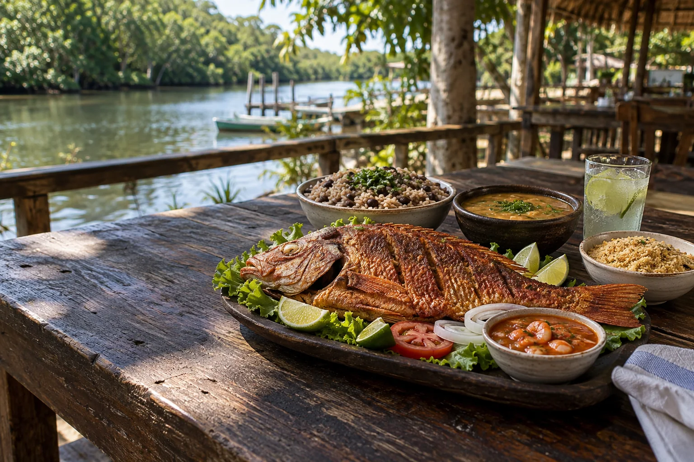
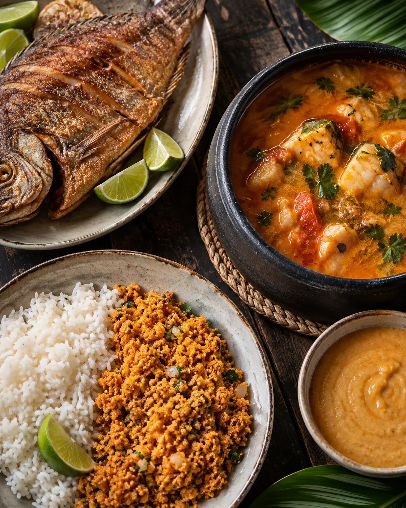

Para dividir
Frito
Peixe inteiro, textura crocante e acompanhamentos da casa.

Eusébio, Ceará
Sabores do Nordeste, porções para dividir e uma mesa sem pressa.
Pargo, tilápia e galo aparecem fritos, cozidos ou em posta. A disponibilidade e os acompanhamentos são confirmados pela casa.
Ver novidades no Instagram
Toque em um sabor para abrir a mesa.
Peixe inteiro, textura crocante e acompanhamentos da casa.
Caldo quente, pirão e sabor de almoço demorado.
Uma especialidade encontrada no cardápio da casa.
A equipe confirma disponibilidade, tamanho, acompanhamentos e valor final pelo WhatsApp.
Av. Beira Rio, 427, Coaçu, Eusébio. Horário publicado: quarta a segunda, das 10h às 16h.